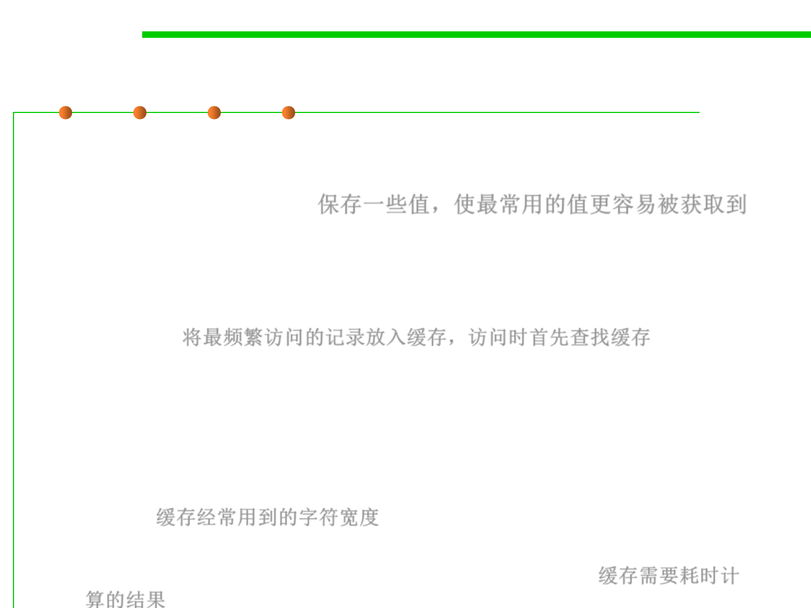

Use Caching 使用缓存
8.3 Code Tuning for Performance Optimization
▪ Caching means saving a few values in such a way that you can
retrieve the most commonly used values more easily than the less
commonly used values. 保存一些值，使最常用的值更容易被获取到
– E.g., If a program randomly reads records from a disk, a routine might use
a cache to save the records read most frequently. When the routine
receives a request for a record, it checks the cache to see whether it has the
record. If it does, the record is returned directly from memory rather than
from disk. 将最频繁访问的记录放入缓存，访问时首先查找缓存
– In addition to caching records on disk, you can apply caching in other
areas. In a Microsoft Windows font-proofing program, the performance
bottleneck was in retrieving the width of each character as it was
displayed. Caching the most recently used character width roughly
doubled the display speed. You can cache the results of time-consuming
computations too—especially if the parameters to the calculation are
simple. 缓存经常用到的字符宽度
– You can cache the results of time-consuming computations too—
especially if the parameters to the calculation are simple. 缓存需要耗时计
算的结果